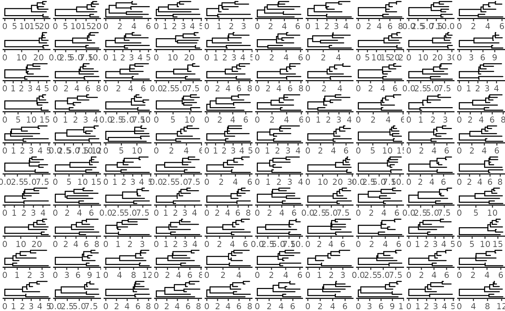
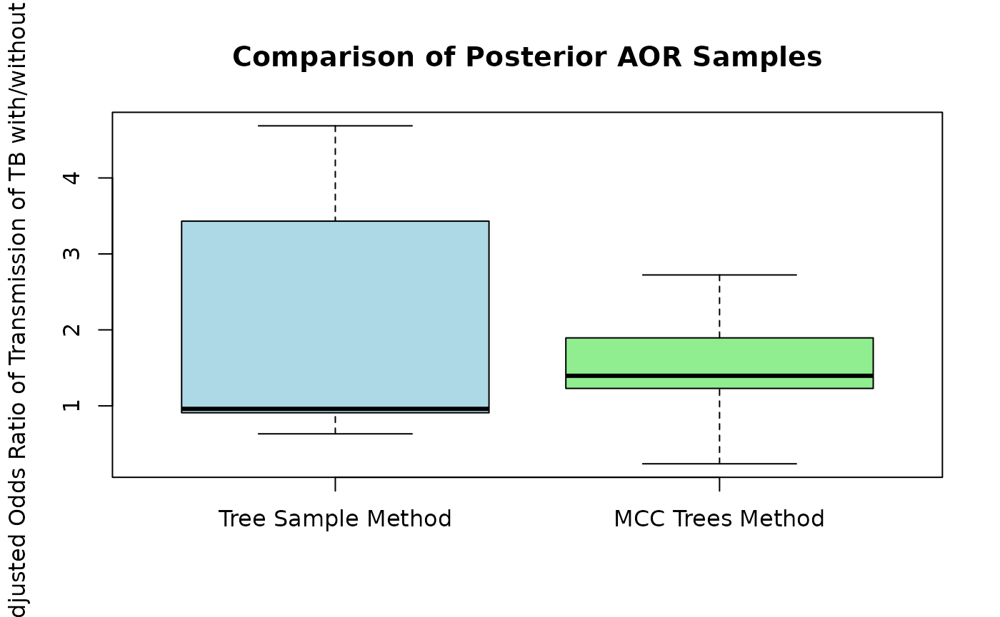

Using the BEAST2 - TransPhylo Pipeline with a Sample of BEAST2 Iterations (Posterior Trees)
tree_sample_pipeline.RmdIntroduction
This vignette will walk you through the process of using the
beast2tpPipeline package to create SNP clusters from a set
of fasta files, create xml files for each cluster, run BEAST2, run
TransPhylo on the BEAST2 results, and then do some kind of regression on
the probabilities assigned by TransPhylo.
After running BEAST2, we have a set of posterior trees for each cluster. With this package we can do two things:
- Create a maximum clade credibility (MCC) tree from the posterior trees, and run TransPhylo multitree on the MCC trees, sharing some parameters that can be simultaneously estimated. The MCC tree is a single tree that attempts to summarize the posterior trees, like a mean or median when posterior samples are values from the real line. With this method we take one tree that summarizes the posterior trees for each cluster, and run TransPhylo on all of them as if they are the true phylogenetic trees.
- Subsample some number of trees from the BEAST2 posterior tree samples for each cluster, and run TransPhylo on a sample of trees for each cluster, rather than one summary tree. This has the advantage of accounting for some of the phylogenetic uncertainty in the BEAST2 trees, rather than assuming that one tree is the truth. However, it is computationally more expensive: instead of one TransPhylo run on all the clusters, we have to run TransPhylo on each cluster separately, each time with a decently-sized set of trees. This should be run on a computing cluster. Additionally, via this method, parameter sharing is not possible.
In this vignette, we will use this package to do (2). For the vignette on (1), see Using the BEAST2 - TransPhylo Pipeline with Maximum Clade Credibility Trees.
First, load the package with library.
Data for this Example
This package comes with data collected from the Kopanyo study, in which tuberculosis (TB) samples were collected in two regions of Botswana, a country with high prevalence of both TB and human immodeficiency virus (HIV). Read more about the study here.
These data contain 4 fasta files, one for each lineage of TB. Each fasta file contains aligned TB sequences from study participants. There is also metadata available for these samples, including things like HIV status, age, gender, sample collection date, and a handful of other variables.
Suppose we are interested in using these TB sequences to draw inference on whether having HIV makes an individual more likely to transmit TB to someone else.
Creating Single Nucleotide Polymorphism (SNP) Clusters
First, read the fasta files and the metadata into R.
fasta_files <- list.files(system.file("kopanyo", package = "beast2tpPipeline"),
pattern = ".fasta", full.names = TRUE)
tb_sequences <- lapply(fasta_files, ape::read.dna, format = "fasta",
as.character = TRUE)
metadata <- list.files(system.file("kopanyo", package = "beast2tpPipeline"),
pattern = ".csv", full.names = TRUE)
metadata <- read.csv(metadata)We can take a peek at the data:
head(metadata)## SampleID Lineage genderf1 agenew hivfinal_new gMixture collectdt smokef1
## 1 BTB-1139 1 1 52 1 0 2014-07-30 1
## 2 BTB-1146 1 1 43 1 1 2014-08-05 1
## 3 BTB-1705 1 1 70 2 1 2015-06-10 1
## 4 BTB-175 1 2 19 1 1 2013-01-16 2
## 5 BTB-1774 1 1 38 1 1 2015-07-30 2
## 6 BTB-1894 1 1 15 NA 1 2015-10-16 2
## tb_everf3 alcohol_excess Lineage_detailed
## 1 2 2 1.1.2
## 2 2 1 1.1.2
## 3 1 2 1.1.2
## 4 1 2 1.1.2
## 5 1 2 1.1.2
## 6 1 2 1.1.2
dim(metadata)## [1] 1426 11Notice that we have 1426 sequences and corresponding metadata. It would be very computationally intensive to run BEAST2 on all of these sequences simultaneously. Instead, we will create clusters of similar sequences and run BEAST2 on each cluster separately. To create clusters, we will use SNP thresholding.
SNPs are single nucleotide polymorphisms, which are single base pair
differences between sequences. We can use these differences to group
sequences into clusters that are more likely to be closely related to
each other. We will use the transcluster package to do
this. transcluster is a package developed alongside the
paper Beyond the
SNP Threshold: Identifying Outbreak Clusters Using Inferred
Transmissions. It was built to handle both plain SNP thresholding to
create clusters, and also clustering based on likely transmissions. Here
we will use the former, as it is simpler and more commonly used, but the
latter is still available in the function.
To assign sequences to their clusters based on SNPs, we will use
assign_snp_clusters, which is a wrapper around some
transcluster functions.
# Get collection dates by lineage
collectdts <- split(metadata, metadata$Lineage)
# Create named vectors of dates, as required by the function
collectdts <- lapply(collectdts, function(meta) {
dates <- meta$collectdt
names(dates) <- meta$SampleID
dates
})
# Apply the function to each lineage of sequences
cluster_assignments <- mapply(assign_snp_clusters,
# `seqs` is a matrix of sequences
seqs = tb_sequences,
# `collectdts` is a named list of vectors of collection dates
# where the elements are collection dates and the names are sample IDs
collectdts = collectdts,
threshold = 5,
SIMPLIFY = FALSE)## Creating SNP-based clusters
## Creating SNP-based clusters
## Creating SNP-based clusters
## Creating SNP-based clustersComputing the distance matrix for large clusters can take time, so if
you already have a distance matrix saved, you can pass it to
assign_snp_clusters with the dist_matrix
argument.
Now we have:
# Rename clusters to include lineage
cluster_assignments <- lapply(seq_along(cluster_assignments), function(i) {
cluster_assignments[[i]]$cluster_name <- paste0("lineage", i, "_", cluster_assignments[[i]]$cluster_name)
cluster_assignments[[i]]
})
# Take a look at the cluster assignments
lapply(cluster_assignments, head)## [[1]]
## sample_id cluster_name collectdt
## 1 BTB-1023 lineage1_cluster1 2014-05-13
## 2 BTB-1058 lineage1_cluster2 2014-06-04
## 3 BTB-1088 lineage1_cluster3 2014-06-25
## 4 BTB-10 lineage1_cluster4 2012-09-10
## 5 BTB-1133 lineage1_cluster5 2014-07-25
## 6 BTB-1139 lineage1_cluster6 2014-07-30
##
## [[2]]
## sample_id cluster_name collectdt
## 1 BTB-1000 lineage2_cluster1 2014-04-28
## 2 BTB-1014 lineage2_cluster2 2014-05-07
## 3 BTB-1025 lineage2_cluster3 2014-05-13
## 4 BTB-1115 lineage2_cluster4 2014-07-16
## 5 BTB-1123 lineage2_cluster5 2014-07-16
## 6 BTB-1160 lineage2_cluster6 2014-08-12
##
## [[3]]
## sample_id cluster_name collectdt
## 1 BTB-119 lineage3_cluster1 2012-12-03
## 2 BTB-1259 lineage3_cluster2 2014-09-25
## 3 BTB-1344 lineage3_cluster3 2014-11-11
## 4 BTB-1410 lineage3_cluster1 2014-12-10
## 5 BTB-155 lineage3_cluster1 2013-01-07
## 6 BTB-1698 lineage3_cluster1 2015-06-08
##
## [[4]]
## sample_id cluster_name collectdt
## 1 BTB-1001 lineage4_cluster1 2014-04-28
## 2 BTB-1003 lineage4_cluster2 2014-04-25
## 3 BTB-1005 lineage4_cluster3 2014-04-30
## 4 BTB-1007 lineage4_cluster4 2014-05-02
## 5 BTB-1009 lineage4_cluster5 2014-05-05
## 6 BTB-1010 lineage4_cluster6 2014-05-05Next, we will create the actual BEAST2 clusters using the
create_BEAST2_clusters function. We will take the
sequences, split them into separate objects, and keep only the SNPs
(sites that are the same across all sequences will not matter to
BEAST2).
We will discard clusters with fewer than 4 sequences, and clusters with fewer than 8 SNPs. We also add constant sites to the sequences, to deal with ascertainment bias in BEAST2 due to the fact that we are only keeping the SNPs.
# For each lineage, use the cluster assignments to put the sequences
# into clusters
snp_matrices <- lapply(seq_along(tb_sequences), function(lineage_index) {
# Pull the sequences and cluster assignments for this lineage
tb_seq_lineage <- tb_sequences[[lineage_index]]
cluster_assignments_lineage <- cluster_assignments[[lineage_index]]
create_BEAST2_clusters(seqs = tb_seq_lineage,
cluster_assignments = cluster_assignments_lineage,
min_cluster_size = 4,
min_varsites = 8,
snps_only = TRUE,
constant_sites = "acgt")
})
# Take a look at the clusters from the first lineage
snp_matrices[[1]]## $lineage1_cluster6
## [,1] [,2] [,3] [,4] [,5] [,6] [,7] [,8] [,9] [,10] [,11] [,12] [,13]
## BTB-1139 "a" "c" "g" "t" "c" "c" "g" "c" "t" "c" "c" "t" "c"
## BTB-1146 "a" "c" "g" "t" "a" "t" "g" "c" "t" "t" "t" "t" "c"
## BTB-1705 "a" "c" "g" "t" "c" "c" "g" "t" "t" "c" "c" "t" "c"
## BTB-175 "a" "c" "g" "t" "c" "c" "g" "c" "t" "c" "c" "c" "t"
## BTB-1774 "a" "c" "g" "t" "c" "c" "c" "c" "t" "c" "c" "c" "t"
## BTB-262 "a" "c" "g" "t" "c" "c" "g" "c" "t" "c" "c" "t" "c"
## BTB-604 "a" "c" "g" "t" "c" "c" "g" "c" "c" "c" "c" "t" "c"
## [,14] [,15] [,16] [,17] [,18]
## BTB-1139 "g" "g" "c" "c" "g"
## BTB-1146 "g" "g" "c" "c" "a"
## BTB-1705 "g" "g" "c" "t" "g"
## BTB-175 "a" "t" "t" "c" "g"
## BTB-1774 "a" "t" "t" "c" "g"
## BTB-262 "g" "g" "c" "c" "g"
## BTB-604 "g" "g" "c" "c" "g"
##
## $lineage1_cluster7
## [,1] [,2] [,3] [,4] [,5] [,6] [,7] [,8] [,9] [,10] [,11] [,12] [,13]
## BTB-1332 "a" "c" "g" "t" "c" "c" "c" "g" "a" "t" "t" "c" "a"
## BTB-1645 "a" "c" "g" "t" "t" "a" "c" "t" "a" "t" "t" "c" "g"
## BTB-584 "a" "c" "g" "t" "c" "c" "c" "g" "a" "t" "t" "g" "a"
## BTB-640 "a" "c" "g" "t" "c" "c" "c" "g" "g" "c" "t" "c" "g"
## BTB-665 "a" "c" "g" "t" "c" "c" "g" "g" "a" "t" "a" "c" "a"
## [,14]
## BTB-1332 "g"
## BTB-1645 "g"
## BTB-584 "g"
## BTB-640 "a"
## BTB-665 "g"The output of this function is a list of matrices, where each matrix
is a cluster of sequences. We will use these to write into the xml file
to run BEAST2. If you are not using the template xml file available with
this package, you should save these sequences as fasta files to be
loaded into BEAUti, which you can do by providing a
fasta_dir argument to the above function.
After running the above chunks, we have two objects:
cluster_assignments, a list of lineages each containing a
dataframe giving sample IDs, cluster names, and collection dates; and
snp_matrices, a list of lineages each containing a list of
matrices, where each matrix is a cluster of sequences.
Creating XML Files for BEAST2
For each cluster, we will create an xml file for BEAST2. In general,
BEAUti is used to create xml files for BEAST2, but here we are using a
model that should be mostly the same across all clusters. For the TB
data, this package comes with a template xml and the function
create_cluster_xml that will fill in the necessary
information for each cluster. The model associated with this xml
template:
- Strict clock model
- HKY substitution model
- Coalescent constant population tree prior
- Uniform clock rate prior, user-supplied bounds
- Log-normal(1, 1.25) (w/ upper bound of 1) frequency parameter
- Log-normal(1, 1.25) transition-transversion parameter for HKY (kappa)
- Log-normal(1, 1.25) coalescent population size parameter
The function to create the xml files requires the sequences (SNPs, for us) for the cluster, the name of the cluster, the sampling dates for the sequences in the cluster, and a directory to output the xml files to.
# For each lineage, write the xml files for all clusters
invisible(lapply(seq_along(snp_matrices), function(lineage_index) {
# Get list of clusters for the lineage
lineage_seqs <- snp_matrices[[lineage_index]]
# Get cluster assignments data frame for the lineage
cluster_assignments_lineage <- cluster_assignments[[lineage_index]]
create_xml_files(seqs_list = lineage_seqs,
cluster_assignments = cluster_assignments_lineage,
out_dir = system.file("mcc_trees_example", "BEAST2",
package = "beast2tpPipeline"))
}))The function above does not return anything, but it writes xml files
to the directory specified in out_dir. Messages are printed
when each xml file is written.
Running BEAST2
Next, we will run BEAST2 on the xml files we just created. We will
use the run_beast2 function, which calls command-line
BEAST2 using system. You may need to change the
beast2_path argument depending on which version of BEAST2
you have installed and where it is installed to.
Below I have parallelized the code using the parallel
package. This is not necessary, but it can speed up the process if you
have multiple cores available. Note that this will not work on Windows,
but there are other ways to parallelize on Windows machines.
cores <- parallel::detectCores() / 2
input_xml <- list.files(system.file("mcc_trees_example", "BEAST2",
package = "beast2tpPipeline"),
pattern = "\\.xml", full.names = TRUE)
invisible(parallel::mclapply(input_xml, run_beast2, mc.cores = cores))After running BEAST2, for each cluster, we will have a log file and a
tree file. The log file logs the MCMC sampling process, and the tree
file contains the posterior trees. First, as a quick check for the
mixing of the MCMC, we can make sure the effective sample size (ESS) is
above 200 for all parameters. We can do this using the
ess_checks function, which calls on the package
tracerer.
beast_logs <- list.files(system.file("mcc_trees_example", "BEAST2",
package = "beast2tpPipeline"),
pattern = "\\.log", full.names = TRUE)
invisible(sapply(beast_logs, function(log) {
ess_checks("BEAST2", log, min_ess = 200)
}))## All ESS are above minimum threshold
## All ESS are above minimum threshold
## All ESS are above minimum threshold
## All ESS are above minimum threshold
## All ESS are above minimum threshold
## All ESS are above minimum threshold
## All ESS are above minimum threshold
## All ESS are above minimum threshold
## All ESS are above minimum threshold
## All ESS are above minimum threshold
## All ESS are above minimum threshold
## All ESS are above minimum threshold## lineage4_cluster183.log:
## ESS is too low for 2 parameters## ESS: 117 ESS: 162## All ESS are above minimum threshold
## All ESS are above minimum threshold
## All ESS are above minimum threshold
## All ESS are above minimum threshold
## All ESS are above minimum threshold
## All ESS are above minimum threshold
## All ESS are above minimum threshold
## All ESS are above minimum threshold
## All ESS are above minimum threshold
## All ESS are above minimum threshold
## All ESS are above minimum threshold
## All ESS are above minimum threshold
## All ESS are above minimum threshold
## All ESS are above minimum threshold
## All ESS are above minimum threshold
## All ESS are above minimum threshold
## All ESS are above minimum threshold
## All ESS are above minimum thresholdIf the ESS is too low, you may want to consider re-running BEAST2
with more iterations. Be sure also to look at traceplots of the MCMC
run, which is easiest to do with Tracer.
Subsampling BEAST2 Iterations
This is where this tutorial diverges from the MCC trees tutorial. Here, we will subsample some number of trees from the BEAST2 runs, and run TransPhylo on the entire subsample for each cluster. This is computationally expensive, so it is best to run this on a computing cluster in parallel.
The reason to do this over using the MCC tree is to account for some of the phylogenetic uncertainty in the BEAST2 trees. The MCC tree functions as a summary of the posterior trees, but it is not the true phylogenetic tree. By running TransPhylo on a subsample of the trees, we can account for some of this uncertainty.
First, we use the sample_BEAST2_trees function to sample
100 trees from each BEAST2 run.
beast_trees_files <- list.files(system.file("mcc_trees_example", "BEAST2",
package = "beast2tpPipeline"),
pattern = "\\.trees", full.names = TRUE)
beast_trees_list <- lapply(beast_trees_files, function(trees_file) {
sample_BEAST2_trees(trees_file, n_trees = 100, seed = 123)
})For each cluster, this gives us:
## ggtree v3.14.0 Learn more at https://yulab-smu.top/contribution-tree-data/
##
## Please cite:
##
## Guangchuang Yu, David Smith, Huachen Zhu, Yi Guan, Tommy Tsan-Yuk Lam.
## ggtree: an R package for visualization and annotation of phylogenetic
## trees with their covariates and other associated data. Methods in
## Ecology and Evolution. 2017, 8(1):28-36. doi:10.1111/2041-210X.12628
beast_trees_list[[1]]## 100 phylogenetic trees
# Plot the first cluster's tree sample
plots <- list()
for (i in 1:100) {
p <- ggtree(beast_trees_list[[1]][i]) + theme_tree2() + theme(plot.margin = margin(0, 0, 0, 0))
plots[[i]] <- p
}
grid.arrange(grobs = plots, ncol = 10, nrow = 10)
Running TransPhylo on the Subsampled Trees
Now that we have a subsample of trees for each cluster, we can run
TransPhylo on each cluster. In the MCC trees tutorial, we ran the
function run_TransPhylo only once; here, we will run it
once for each cluster.
# Make sure the tree names match the cluster dictionary names
# By naming them after the files they came from, then removing the
# file extension & extras that BEAST2 adds to the filenames
names(beast_trees_list) <- gsub(".trees", "", basename(beast_trees_files))
names(beast_trees_list) <- gsub(".*-", "", names(beast_trees_list))
# Get all cluster assignments in one data frame
all_cluster_assignments <- do.call(rbind, cluster_assignments)
# Run TransPhylo on the tree samples in parallel
# (I'm using the same number of cores as clusters)
cores <- min(length(beast_trees_list), parallel::detectCores())
parallel::mclapply(seq_along(beast_trees_list), function(trees_sample_index) {
run_TransPhylo(beast_trees_list[[trees_sample_index]],
cluster_name = names(beast_trees_list)[trees_sample_index],
type = "trees_sample",
cluster_dict = all_cluster_assignments,
out_dir = system.file("tree_sample_example",
"TransPhylo",
package = "beast2tpPipeline"),
output_name = paste0("tp_res_",
names(beast_trees_list)[trees_sample_index]),
w.shape = 10,
w.scale = 0.1,
prior_pi_a = 1,
prior_pi_b = 19,
startNeg = 1.48,
mcmcIterations = 100000)
}, mc.cores = cores)The code above will save both the TransPhylo result itself and the
posterior probabilities for each cluster. The TransPhylo results are
large RDS files, so they are not included with the package. The infector
probabilities are saved in the tree_sample_example
directory in the package.
Note: A couple of the clusters did not run successfully, so those have been excluded from the below results. Why this happened should be further explored when time permits.
We can look at the distribution of assigned probabilities, as in the MCC trees tutorial:
# Read in prob_source files
prob_source_files <- list.files(system.file("trees_sample_example",
"TransPhylo",
package = "beast2tpPipeline"),
full.names = TRUE)
prob_source_list <- lapply(prob_source_files, readRDS)
prob_source <- do.call(rbind, prob_source_list)
hist(prob_source$prob, main = "Distribution of TransPhylo Probabilities",
xlab = "Probability of being an infector", col = "lightblue")And directly compare the assigned probabilities with a scatterplot:
prob_source_mcc <- readRDS(system.file("mcc_trees_example", "TransPhylo",
"tp_res_prob_source.rds",
package = "beast2tpPipeline"))
colnames(prob_source_mcc) <- c("SampleID", "prob_source_mcc")
prob_source_pairs <- merge(prob_source, prob_source_mcc, by = "SampleID")
plot(prob_source_pairs$prob_source, prob_source_pairs$prob_source_mcc,
xlab = "Prob Source Using BEAST2 Tree Sample Method (100 Trees)", ylab = "Prob Source Using BEAST2 MCC Trees",
main = "Comparison of TransPhylo Probabilities of Being an Infection Source")
abline(a = 0, b = 1, col = "darkgreen")
spline_fit <- smooth.spline(prob_source_pairs$prob_source,
prob_source_pairs$prob_source_mcc,
spar = 1.75)
lines(spline_fit, col = "darkgreen", lty = 2)Regression with TransPhylo Results
As in the MCC tree pipeline, we can regress the probabilities assigned by TransPhylo on some covariates. Here we will use the Bayesian method of handling misclassification.
# Get dataframe with covariates for regression, add age and gender;
# for this method, ensure all are numeric
cleaned_data <- metadata[, c("SampleID", "hivfinal_new", "genderf1",
"tb_everf3", "smokef1", "alcohol_excess")]
cleaned_data <- cleaned_data[complete.cases(cleaned_data), ]
cleaned_data[, 2:6] <- apply(cleaned_data[, 2:6], 2,
function(x) as.numeric(x) - 1)
samples_logistic <- regression(method = "bayesian_logistic_misclass",
cleaned_data = cleaned_data,
prob_source = prob_source,
prob_cutoff = 0.6,
sensitivity = 0.28,
specificity = 0.97)##
## SAMPLING FOR MODEL 'anon_model' NOW (CHAIN 1).
## Chain 1:
## Chain 1: Gradient evaluation took 7.7e-05 seconds
## Chain 1: 1000 transitions using 10 leapfrog steps per transition would take 0.77 seconds.
## Chain 1: Adjust your expectations accordingly!
## Chain 1:
## Chain 1:
## Chain 1: Iteration: 1 / 2000 [ 0%] (Warmup)
## Chain 1: Iteration: 200 / 2000 [ 10%] (Warmup)
## Chain 1: Iteration: 400 / 2000 [ 20%] (Warmup)
## Chain 1: Iteration: 600 / 2000 [ 30%] (Warmup)
## Chain 1: Iteration: 800 / 2000 [ 40%] (Warmup)
## Chain 1: Iteration: 1000 / 2000 [ 50%] (Warmup)
## Chain 1: Iteration: 1001 / 2000 [ 50%] (Sampling)
## Chain 1: Iteration: 1200 / 2000 [ 60%] (Sampling)
## Chain 1: Iteration: 1400 / 2000 [ 70%] (Sampling)
## Chain 1: Iteration: 1600 / 2000 [ 80%] (Sampling)
## Chain 1: Iteration: 1800 / 2000 [ 90%] (Sampling)
## Chain 1: Iteration: 2000 / 2000 [100%] (Sampling)
## Chain 1:
## Chain 1: Elapsed Time: 0.448 seconds (Warm-up)
## Chain 1: 0.418 seconds (Sampling)
## Chain 1: 0.866 seconds (Total)
## Chain 1:
##
## SAMPLING FOR MODEL 'anon_model' NOW (CHAIN 2).
## Chain 2:
## Chain 2: Gradient evaluation took 3.6e-05 seconds
## Chain 2: 1000 transitions using 10 leapfrog steps per transition would take 0.36 seconds.
## Chain 2: Adjust your expectations accordingly!
## Chain 2:
## Chain 2:
## Chain 2: Iteration: 1 / 2000 [ 0%] (Warmup)
## Chain 2: Iteration: 200 / 2000 [ 10%] (Warmup)
## Chain 2: Iteration: 400 / 2000 [ 20%] (Warmup)
## Chain 2: Iteration: 600 / 2000 [ 30%] (Warmup)
## Chain 2: Iteration: 800 / 2000 [ 40%] (Warmup)
## Chain 2: Iteration: 1000 / 2000 [ 50%] (Warmup)
## Chain 2: Iteration: 1001 / 2000 [ 50%] (Sampling)
## Chain 2: Iteration: 1200 / 2000 [ 60%] (Sampling)
## Chain 2: Iteration: 1400 / 2000 [ 70%] (Sampling)
## Chain 2: Iteration: 1600 / 2000 [ 80%] (Sampling)
## Chain 2: Iteration: 1800 / 2000 [ 90%] (Sampling)
## Chain 2: Iteration: 2000 / 2000 [100%] (Sampling)
## Chain 2:
## Chain 2: Elapsed Time: 0.426 seconds (Warm-up)
## Chain 2: 0.46 seconds (Sampling)
## Chain 2: 0.886 seconds (Total)
## Chain 2:
##
## SAMPLING FOR MODEL 'anon_model' NOW (CHAIN 3).
## Chain 3:
## Chain 3: Gradient evaluation took 3.5e-05 seconds
## Chain 3: 1000 transitions using 10 leapfrog steps per transition would take 0.35 seconds.
## Chain 3: Adjust your expectations accordingly!
## Chain 3:
## Chain 3:
## Chain 3: Iteration: 1 / 2000 [ 0%] (Warmup)
## Chain 3: Iteration: 200 / 2000 [ 10%] (Warmup)
## Chain 3: Iteration: 400 / 2000 [ 20%] (Warmup)
## Chain 3: Iteration: 600 / 2000 [ 30%] (Warmup)
## Chain 3: Iteration: 800 / 2000 [ 40%] (Warmup)
## Chain 3: Iteration: 1000 / 2000 [ 50%] (Warmup)
## Chain 3: Iteration: 1001 / 2000 [ 50%] (Sampling)
## Chain 3: Iteration: 1200 / 2000 [ 60%] (Sampling)
## Chain 3: Iteration: 1400 / 2000 [ 70%] (Sampling)
## Chain 3: Iteration: 1600 / 2000 [ 80%] (Sampling)
## Chain 3: Iteration: 1800 / 2000 [ 90%] (Sampling)
## Chain 3: Iteration: 2000 / 2000 [100%] (Sampling)
## Chain 3:
## Chain 3: Elapsed Time: 0.427 seconds (Warm-up)
## Chain 3: 0.467 seconds (Sampling)
## Chain 3: 0.894 seconds (Total)
## Chain 3:
##
## SAMPLING FOR MODEL 'anon_model' NOW (CHAIN 4).
## Chain 4:
## Chain 4: Gradient evaluation took 5.8e-05 seconds
## Chain 4: 1000 transitions using 10 leapfrog steps per transition would take 0.58 seconds.
## Chain 4: Adjust your expectations accordingly!
## Chain 4:
## Chain 4:
## Chain 4: Iteration: 1 / 2000 [ 0%] (Warmup)
## Chain 4: Iteration: 200 / 2000 [ 10%] (Warmup)
## Chain 4: Iteration: 400 / 2000 [ 20%] (Warmup)
## Chain 4: Iteration: 600 / 2000 [ 30%] (Warmup)
## Chain 4: Iteration: 800 / 2000 [ 40%] (Warmup)
## Chain 4: Iteration: 1000 / 2000 [ 50%] (Warmup)
## Chain 4: Iteration: 1001 / 2000 [ 50%] (Sampling)
## Chain 4: Iteration: 1200 / 2000 [ 60%] (Sampling)
## Chain 4: Iteration: 1400 / 2000 [ 70%] (Sampling)
## Chain 4: Iteration: 1600 / 2000 [ 80%] (Sampling)
## Chain 4: Iteration: 1800 / 2000 [ 90%] (Sampling)
## Chain 4: Iteration: 2000 / 2000 [100%] (Sampling)
## Chain 4:
## Chain 4: Elapsed Time: 0.433 seconds (Warm-up)
## Chain 4: 0.447 seconds (Sampling)
## Chain 4: 0.88 seconds (Total)
## Chain 4:
# Pull the samples for the hiv coefficient, which are the log adjusted
# odds ratios (AORs) for the logistic regression
summary(exp(samples_logistic$beta[1, ]))## Min. 1st Qu. Median Mean 3rd Qu. Max.
## 0.7479 0.9852 1.0217 1.2920 1.3923 2.3130And we can compare these posterior AOR samples to those obtained using the MCC trees method:
samples_logistic_mcc <- regression(method = "bayesian_logistic_misclass",
cleaned_data = cleaned_data,
prob_source = prob_source,
prob_cutoff = 0.6,
sensitivity = 0.28,
specificity = 0.97)##
## SAMPLING FOR MODEL 'anon_model' NOW (CHAIN 1).
## Chain 1:
## Chain 1: Gradient evaluation took 4.1e-05 seconds
## Chain 1: 1000 transitions using 10 leapfrog steps per transition would take 0.41 seconds.
## Chain 1: Adjust your expectations accordingly!
## Chain 1:
## Chain 1:
## Chain 1: Iteration: 1 / 2000 [ 0%] (Warmup)
## Chain 1: Iteration: 200 / 2000 [ 10%] (Warmup)
## Chain 1: Iteration: 400 / 2000 [ 20%] (Warmup)
## Chain 1: Iteration: 600 / 2000 [ 30%] (Warmup)
## Chain 1: Iteration: 800 / 2000 [ 40%] (Warmup)
## Chain 1: Iteration: 1000 / 2000 [ 50%] (Warmup)
## Chain 1: Iteration: 1001 / 2000 [ 50%] (Sampling)
## Chain 1: Iteration: 1200 / 2000 [ 60%] (Sampling)
## Chain 1: Iteration: 1400 / 2000 [ 70%] (Sampling)
## Chain 1: Iteration: 1600 / 2000 [ 80%] (Sampling)
## Chain 1: Iteration: 1800 / 2000 [ 90%] (Sampling)
## Chain 1: Iteration: 2000 / 2000 [100%] (Sampling)
## Chain 1:
## Chain 1: Elapsed Time: 0.421 seconds (Warm-up)
## Chain 1: 0.484 seconds (Sampling)
## Chain 1: 0.905 seconds (Total)
## Chain 1:
##
## SAMPLING FOR MODEL 'anon_model' NOW (CHAIN 2).
## Chain 2:
## Chain 2: Gradient evaluation took 3.5e-05 seconds
## Chain 2: 1000 transitions using 10 leapfrog steps per transition would take 0.35 seconds.
## Chain 2: Adjust your expectations accordingly!
## Chain 2:
## Chain 2:
## Chain 2: Iteration: 1 / 2000 [ 0%] (Warmup)
## Chain 2: Iteration: 200 / 2000 [ 10%] (Warmup)
## Chain 2: Iteration: 400 / 2000 [ 20%] (Warmup)
## Chain 2: Iteration: 600 / 2000 [ 30%] (Warmup)
## Chain 2: Iteration: 800 / 2000 [ 40%] (Warmup)
## Chain 2: Iteration: 1000 / 2000 [ 50%] (Warmup)
## Chain 2: Iteration: 1001 / 2000 [ 50%] (Sampling)
## Chain 2: Iteration: 1200 / 2000 [ 60%] (Sampling)
## Chain 2: Iteration: 1400 / 2000 [ 70%] (Sampling)
## Chain 2: Iteration: 1600 / 2000 [ 80%] (Sampling)
## Chain 2: Iteration: 1800 / 2000 [ 90%] (Sampling)
## Chain 2: Iteration: 2000 / 2000 [100%] (Sampling)
## Chain 2:
## Chain 2: Elapsed Time: 0.424 seconds (Warm-up)
## Chain 2: 0.444 seconds (Sampling)
## Chain 2: 0.868 seconds (Total)
## Chain 2:
##
## SAMPLING FOR MODEL 'anon_model' NOW (CHAIN 3).
## Chain 3:
## Chain 3: Gradient evaluation took 3.5e-05 seconds
## Chain 3: 1000 transitions using 10 leapfrog steps per transition would take 0.35 seconds.
## Chain 3: Adjust your expectations accordingly!
## Chain 3:
## Chain 3:
## Chain 3: Iteration: 1 / 2000 [ 0%] (Warmup)
## Chain 3: Iteration: 200 / 2000 [ 10%] (Warmup)
## Chain 3: Iteration: 400 / 2000 [ 20%] (Warmup)
## Chain 3: Iteration: 600 / 2000 [ 30%] (Warmup)
## Chain 3: Iteration: 800 / 2000 [ 40%] (Warmup)
## Chain 3: Iteration: 1000 / 2000 [ 50%] (Warmup)
## Chain 3: Iteration: 1001 / 2000 [ 50%] (Sampling)
## Chain 3: Iteration: 1200 / 2000 [ 60%] (Sampling)
## Chain 3: Iteration: 1400 / 2000 [ 70%] (Sampling)
## Chain 3: Iteration: 1600 / 2000 [ 80%] (Sampling)
## Chain 3: Iteration: 1800 / 2000 [ 90%] (Sampling)
## Chain 3: Iteration: 2000 / 2000 [100%] (Sampling)
## Chain 3:
## Chain 3: Elapsed Time: 0.426 seconds (Warm-up)
## Chain 3: 0.446 seconds (Sampling)
## Chain 3: 0.872 seconds (Total)
## Chain 3:
##
## SAMPLING FOR MODEL 'anon_model' NOW (CHAIN 4).
## Chain 4:
## Chain 4: Gradient evaluation took 3.6e-05 seconds
## Chain 4: 1000 transitions using 10 leapfrog steps per transition would take 0.36 seconds.
## Chain 4: Adjust your expectations accordingly!
## Chain 4:
## Chain 4:
## Chain 4: Iteration: 1 / 2000 [ 0%] (Warmup)
## Chain 4: Iteration: 200 / 2000 [ 10%] (Warmup)
## Chain 4: Iteration: 400 / 2000 [ 20%] (Warmup)
## Chain 4: Iteration: 600 / 2000 [ 30%] (Warmup)
## Chain 4: Iteration: 800 / 2000 [ 40%] (Warmup)
## Chain 4: Iteration: 1000 / 2000 [ 50%] (Warmup)
## Chain 4: Iteration: 1001 / 2000 [ 50%] (Sampling)
## Chain 4: Iteration: 1200 / 2000 [ 60%] (Sampling)
## Chain 4: Iteration: 1400 / 2000 [ 70%] (Sampling)
## Chain 4: Iteration: 1600 / 2000 [ 80%] (Sampling)
## Chain 4: Iteration: 1800 / 2000 [ 90%] (Sampling)
## Chain 4: Iteration: 2000 / 2000 [100%] (Sampling)
## Chain 4:
## Chain 4: Elapsed Time: 0.415 seconds (Warm-up)
## Chain 4: 0.452 seconds (Sampling)
## Chain 4: 0.867 seconds (Total)
## Chain 4:
# Pull the samples for the exponentiated coef and compare
boxplot(exp(samples_logistic$beta[1, ]), exp(samples_logistic_mcc$beta[1, ]),
names = c("Tree Sample Method", "MCC Trees Method"),
main = "Comparison of Posterior AOR Samples",
ylab = "Adjusted Odds Ratio of Transmission of TB with/without HIV",
col = c("lightblue", "lightgreen"))